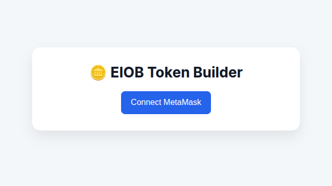
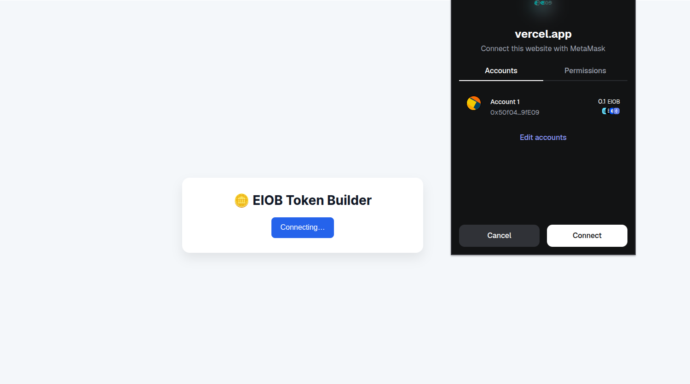
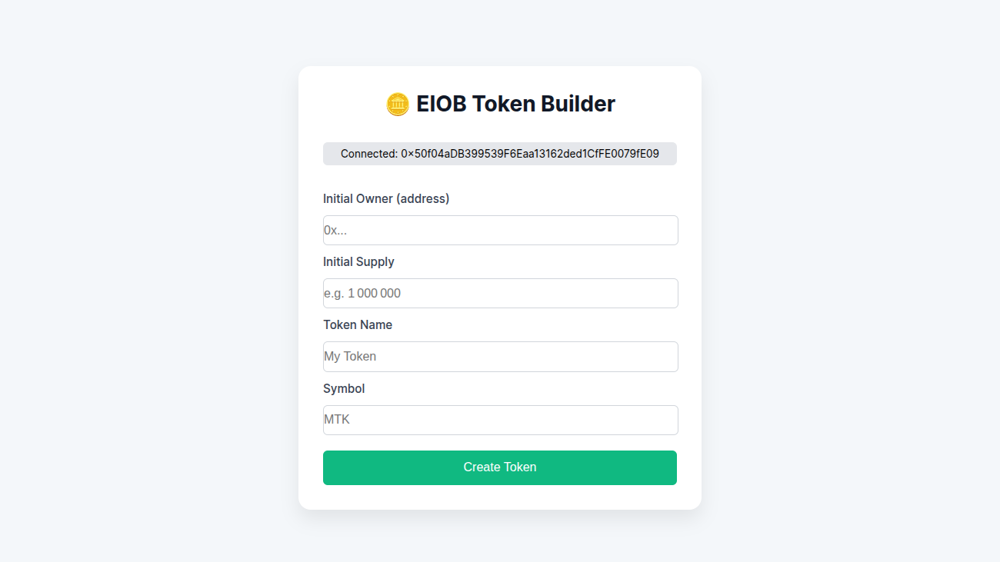
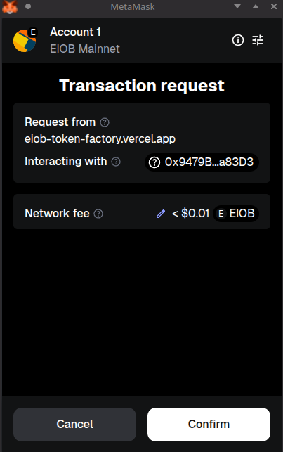
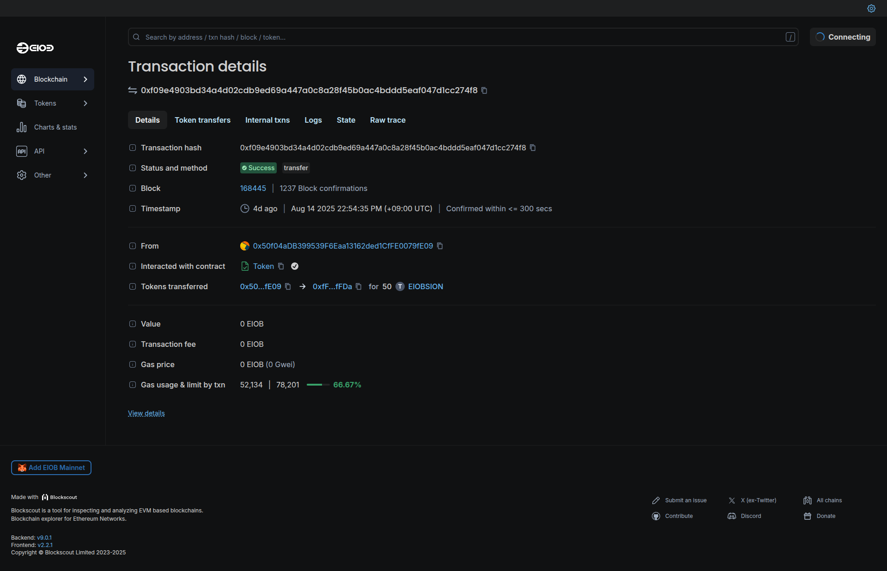
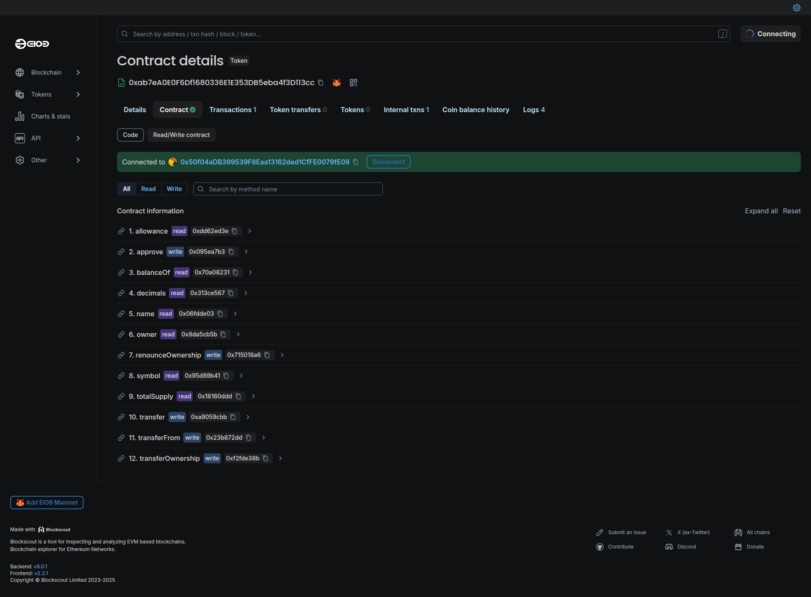

EIOB 토큰 빌더 사용 방법
토큰 빌더 이용 전 필수 준비
- Metamask 지갑이 설치된 브라우저
- Metamask 지갑은 EIOB Mainnet에 연결되어있어야 합니다.
EIOB 토큰 빌더로 토큰 생성법
1. 메타마스크 연결 버튼 클릭

2. 메타마스크 지갑 연결하기

3. 토큰 세부 정보 추가

새로 생성할 토큰의 세부 정보를 입력하세요.
4. EIOB 메인넷에 토큰 생성하기

Create Token 버튼을 누른 후 Metamask에서 Transaction을 전송해주세요.
5. 블록 탐색기에서 거래 확인하기

Transaction이 완료될 때까지 기다렸다가 Explorer에서 새 토큰의 세부 정보를 확인하세요.
6. 새 토큰의 정보 확인 및 각종 기능 사용

Transaction 페이지에서 Token로 이동하면 토큰의 스마트 컨트랙트를 확인하고 Metamask 지갑을 연결하여 ERC20 표준 토큰의 각종 기능을 사용 가능합니다.